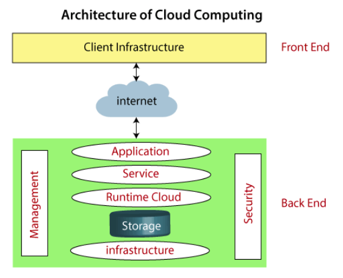
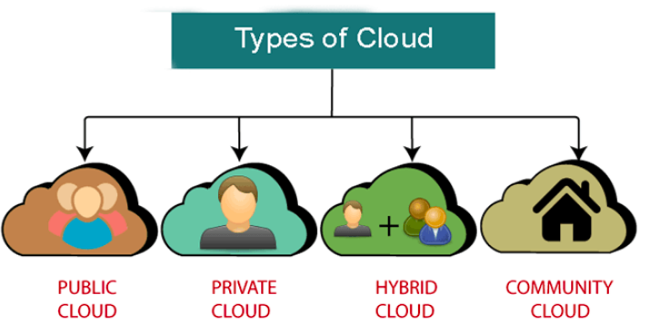
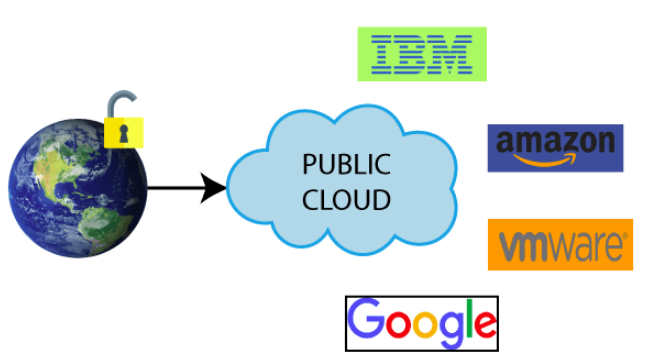
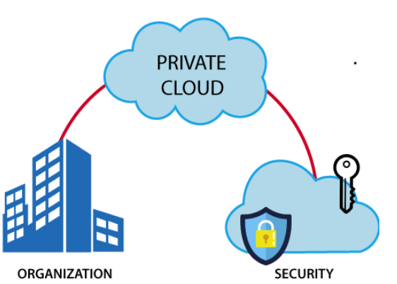
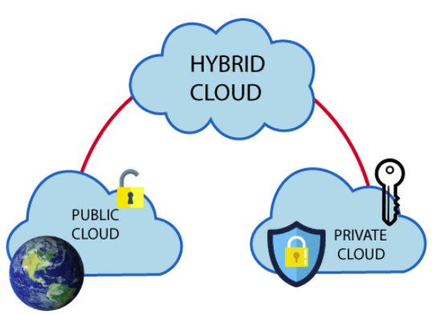
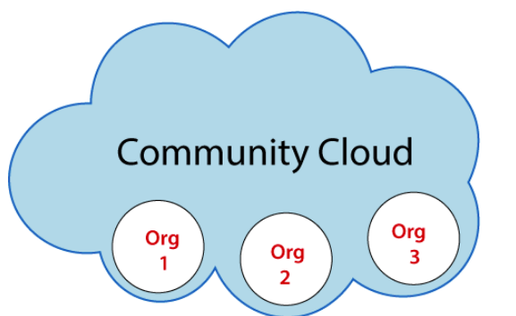
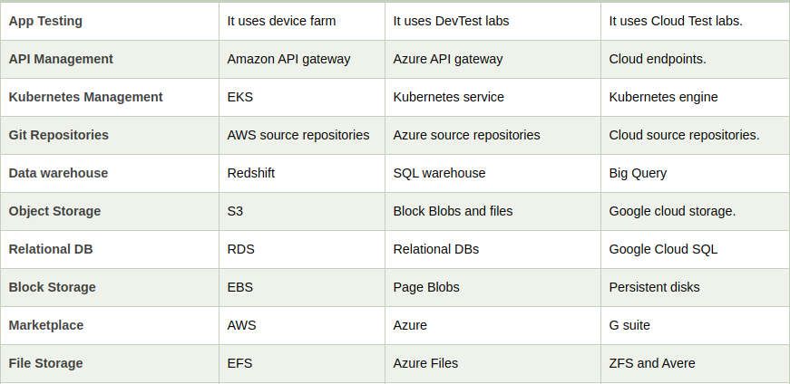
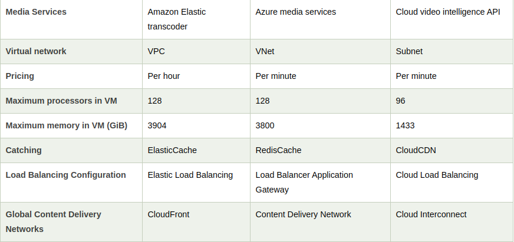
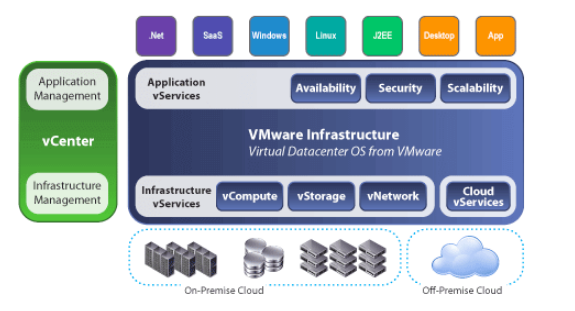

What is Cloud Computing ?
The term cloud refers to a network or the internet. It is a technology that uses remote servers on the internet to store, manage, and access data online rather than local drives. The data can be anything such as files, images, documents, audio, video, and more.
We can do the following using cloud computing:
• Developing new applications and services
• Storage, back up, and recovery of data
• Hosting blogs and websites
• Delivery of software on demand
• Analysis of data
• Streaming videos and audios
Why Cloud Computing ?
Small as well as large IT companies, follow the traditional methods to provide the IT infrastructure. That means for any IT company, we need a Server Room that is the basic need of IT companies.
In that server room, there should be a database server, mail server, networking, firewalls, routers, modem, switches, QPS (Query Per Second means how much queries or load will be handled by the server), configurable system, high net speed, and the maintenance engineers.
To establish such IT infrastructure, we need to spend lots of money. To overcome all these problems and to reduce the IT infrastructure cost, Cloud Computing comes into existence.
Characteristics Of Cloud Computing
Agility
The cloud works in a distributed computing environment. It shares resources among users and works very fast.
High availability and reliability
The availability of servers is high and more reliable because the chances of infrastructure failure are minimum.
Scalability
Cloud offers "on-demand" provisioning of resources on a large scale, without having engineers for peak loads.
Multi-Sharing
With the help of cloud computing, multiple users and applications can work more efficiently with cost reductions by sharing common infrastructure.
Device and Location Independence
Cloud computing enables the users to access systems using a web browser regardless of their location or what device they use e.g. PC, mobile phone, etc. As infrastructure is off-site (typically provided by a third-party) and accessed via the Internet, users can connect from anywhere.
Maintenance
Maintenance of cloud computing applications is easier, since they do not need to be installed on each user's computer and can be accessed from different places. So, it reduces the cost also.
Low Cost
By using cloud computing, the cost will be reduced because to take the services of cloud computing, IT company need not to set its own infrastructure and pay-as-per usage of resources.
Services in the pay-per-use mode
Application Programming Interfaces (APIs) are provided to the users so that they can access services on the cloud by using these APIs and pay the charges as per the usage of services.
Cloud Computing Architecture
Cloud computing technology is used by both small and large organizations to store the information in cloud and access it from anywhere at anytime using the internet connection.
Cloud computing architecture is a combination of service-oriented architecture and event-driven architecture.
Cloud computing architecture is divided into the following two parts -
Front-end :
Used by the client. It contains client-side interfaces and applications that are required to access the cloud computing platforms. The front end includes web servers (including Chrome, Firefox, internet explorer, etc.), thin & fat clients, tablets, and mobile devices.
Back-end :
The back end is used by the service provider. It manages all the resources that are required to provide cloud computing services. It includes a huge amount of data storage, security mechanism, virtual machines, deploying models, servers, traffic control mechanisms, etc.

How does cloud works ?
Assume that you are an executive at a very big corporation. Your particular responsibilities include to make sure that all of your employees have the right hardware and software they need to do their jobs. To buy computers for everyone is not enough. You also have to purchase software as well as software licenses and then provide these softwares to your employees as they require. Whenever you hire a new employee, you need to buy more software or make sure your current software license allows another user. It is so stressful that you have to spend lots of money.
But, there may be an alternative for executives like you. So, instead of installing a suite of software for each computer, you just need to load one application. That application will allow the employees to log-in into a Web-based service which hosts all the programs for the user that is required for his/her job. Remote servers owned by another company and that will run everything from e-mail to word processing to complex data analysis programs. It is called cloud computing, and it could change the entire computer industry.
In a cloud computing system, there is a significant workload shift. Local computers have no longer to do all the heavy lifting when it comes to run applications. But cloud computing can handle that much heavy load easily and automatically. Hardware and software demands on the user's side decrease. The only thing the user's computer requires to be able to run is the cloud computing interface software of the system, which can be as simple as a Web browser and the cloud's network takes care of the rest.
Types Of Cloud

Public Cloud
Public cloud is open to all to store and access information via the Internet using the pay-per-usage method.
In public cloud, computing resources are managed and operated by the Cloud Service Provider (CSP).

Few Points for Public Cloud :
• Public cloud is owned at a lower cost than the private and hybrid cloud.
• Public cloud is maintained by the cloud service provider, so no worry about the maintenance.
• Public cloud is easier to integrate. Hence it offers a better flexibility approach to consumers.
• Public cloud is location independent because its services are delivered through the internet.
• Public cloud is highly scalable as per the requirement of computing resources.
• It is accessible by the general public, so there is no limit to the number of users.
• Public Cloud is less secure because resources are shared publicly.
• Performance depends upon the high-speed internet network link to the cloud provider.
• The Client has no control of data.
Private Cloud
Private cloud is also known as an internal cloud or corporate cloud. It is used by organizations to build and manage their own data centers internally or by the third party. It can be deployed using Opensource tools such as Openstack and Eucalyptus.

Few Points for Private Cloud :
• Private cloud provides a high level of security and privacy to the users.
• Private cloud offers better performance with improved speed and space capacity.
• It allows the IT team to quickly allocate and deliver on-demand IT resources.
• The organization has full control over the cloud because it is managed by the organization itself. So, there is no need for the organization to depends on anybody.
• It is suitable for organizations that require a separate cloud for their personal use and data security is the first priority.
• Skilled people are required to manage and operate cloud services.
• Private cloud is accessible within the organization, so the area of operations is limited.
• Private cloud is not suitable for organizations that have a high user base, and organizations that do not have the prebuilt infrastructure, sufficient manpower to maintain and manage the cloud.
Hybrid Cloud
Hybrid Cloud = Public Cloud + Private Cloud
Hybrid cloud is partially secure because the services which are running on the public cloud can be accessed by anyone, while the services which are running on a private cloud can be accessed only by the organization's users.
Example: Google Application Suite (Gmail, Google Apps, and Google Drive), Office 365 (MS Office on the Web and One Drive), Amazon Web Services.

Few Points for Hybrid Cloud :
• Hybrid cloud is suitable for organizations that require more security than the public cloud.
• Hybrid cloud helps you to deliver new products and services more quickly.
• Hybrid cloud provides an excellent way to reduce the risk.
• Hybrid cloud offers flexible resources because of the public cloud and secure resources because of the private cloud.
• In Hybrid Cloud, security feature is not as good as the private cloud.
• Managing a hybrid cloud is complex because it is difficult to manage more than one type of deployment model.
• In the hybrid cloud, the reliability of the services depends on cloud service providers.
Community Cloud
Community cloud allows systems and services to be accessible by a group of several organizations to share the information between the organization and a specific community. It is owned, managed, and operated by one or more organizations in the community, a third party, or a combination of them.
Example: Health Care community cloud

Few Points for Community Cloud :
• Community cloud is cost-effective because the whole cloud is being shared by several organizations or communities.
• Community cloud is suitable for organizations that want to have a collaborative cloud with more security features than the public cloud.
• It provides better security than the public cloud.
• It provdes collaborative and distributive environment.
• Community cloud allows us to share cloud resources, infrastructure, and other capabilities among various organizations.
• Community cloud is not a good choice for every organization.
• Security features are not as good as the private cloud.
• It is not suitable if there is no collaboration.
• The fixed amount of data storage and bandwidth is shared among all community members.
Cloud Service Models
Infrastructure as a Service (IaaS)
IaaS is also known as Hardware as a Service (HaaS). It is a computing infrastructure managed over the internet. The main advantage of using IaaS is that it helps users to avoid the cost and complexity of purchasing and managing the physical servers.
Example: DigitalOcean, Linode, Amazon Web Services (AWS), Microsoft Azure, Google Compute Engine (GCE), Rackspace, and Cisco Metacloud.
Features :
• Resources are available as a service
• Services are highly scalable
• Dynamic and flexible
• GUI and API-based access
• Automated administrative tasks
Platform as a Service (PaaS)
PaaS cloud computing platform is created for the programmer to develop, test, run, and manage the applications.
Example: AWS Elastic Beanstalk, Windows Azure, Heroku, Force.com, Google App Engine, Apache Stratos, Magento Commerce Cloud, and OpenShift.
Features :
• Accessible to various users via the same development application.
• Integrates with web services and databases.
• Builds on virtualization technology, so resources can easily be scaled up or down as per the organization's need.
• Support multiple languages and frameworks.
• Provides an ability to "Auto-scale".
Software as a Service (SaaS)
SaaS is also known as "on-demand software". It is a software in which the applications are hosted by a cloud service provider. Users can access these applications with the help of internet connection and web browser.
Example: BigCommerce, Google Apps, Salesforce, Dropbox, ZenDesk, Cisco WebEx, ZenDesk, Slack, and GoToMeeting.
Features :
• Managed from a central location
• Hosted on a remote server
• Accessible over the internet
• Users are not responsible for hardware and software updates. Updates are applied automatically.
• The services are purchased on the pay-as-per-use basis
Comparision of Cloud Services Providers


Virtualization in Cloud Computing
Virtualization is the "creation of a virtual (rather than actual) version of something, such as a server, a desktop, a storage device, an operating system or network resources".
In other words, Virtualization is a technique, which allows to share a single physical instance of a resource or an application among multiple customers and organizations. It does by assigning a logical name to a physical storage and providing a pointer to that physical resource when demanded.
Concept behind the Virtualization
Creation of a virtual machine over existing operating system and hardware is known as Hardware Virtualization. A Virtual machine provides an environment that is logically separated from the underlying hardware.
The machine on which the virtual machine is going to create is known as Host Machine and that virtual machine is referred as a Guest Machine
Types of Virtualization
Hardware Virtualization
When the virtual machine software or virtual machine manager (VMM) is directly installed on the hardware system is known as hardware virtualization.
The main job of hypervisor is to control and monitoring the processor, memory and other hardware resources.
After virtualization of hardware system we can install different operating system on it and run different applications on those OS.
Usage:
Hardware virtualization is mainly done for the server platforms, because controlling virtual machines is much easier than controlling a physical server.
Operating system Virtualization
When the virtual machine software or virtual machine manager (VMM) is installed on the Host operating system instead of directly on the hardware system is known as operating system virtualization.
Usage:
Operating System Virtualization is mainly used for testing the applications on different platforms of OS.
Server Virtualization
When the virtual machine software or virtual machine manager (VMM) is directly installed on the Server system is known as server virtualization.
Usage:
Server virtualization is done because a single physical server can be divided into multiple servers on the demand basis and for balancing the load.
Storage Virtualization
Storage virtualization is the process of grouping the physical storage from multiple network storage devices so that it looks like a single storage device.
Storage virtualization is also implemented by using software applications.
Usage:
Storage virtualization is mainly done for back-up and recovery purposes.
Data Virtualization
Data virtualization is the process of retrieve data from various resources without knowing its type and physical location where it is stored. It collects heterogeneous data from different resources and allows data users across the organization to access this data according to their work requirements. This heterogeneous data can be accessed using any application such as web portals, web services, E-commerce, Software as a Service (SaaS), and mobile application.
We can use Data Virtualization in the field of data integration, business intelligence, and cloud computing.
How does virtualization work in cloud computing?
Virtualization plays a very important role in the cloud computing technology, normally in the cloud computing, users share the data present in the clouds like application etc, but actually with the help of virtualization users shares the Infrastructure.
The main usage of Virtualization Technology is to provide the applications with the standard versions to their cloud users, suppose if the next version of that application is released, then cloud provider has to provide the latest version to their cloud users and practically it is possible because it is more expensive.
To overcome this problem we use basically virtualization technology, By using virtualization, all severs and the software application which are required by other cloud providers are maintained by the third party people, and the cloud providers has to pay the money on monthly or annual basis.

Mainly Virtualization means, running multiple operating systems on a single machine but sharing all the hardware resources. And it helps us to provide the pool of IT resources so that we can share these IT resources in order get benefits in the business.
![]()